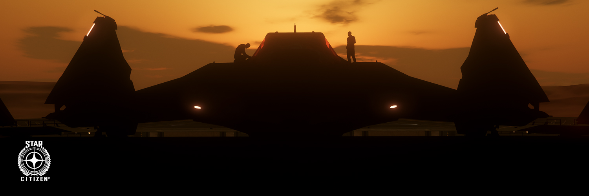

// Historical Record
The 246-year Messer dynasty ends. The Senate moves quickly — the Advocacy is restructured, the intelligence apparatus dismantled, the black budget programs shuttered. Veterans of the old system are dispersed. The Senate calls it accountability. What they actually do is perform surgery on a patient and leave the wound open.
The post-Messer UEE operates without effective cross-agency intelligence synthesis. The Vanduul push harder on the borders. The Xi'An watch carefully. Criminal syndicates fill the spaces where Messer-era enforcement had been. The Division of Executive Services accumulates data it cannot meaningfully process. The gap widens.
A civilian convoy is destroyed in a Vanduul-adjacent system. Predictive signals existed and were not acted upon — not because analysts lacked data, but because the post-Messer restructuring eliminated the cross-agency synthesis function. Senate report sealed within thirty days. The Division director is promoted. The founding catalyst.
The founding members identify each other and reach collective purpose. Cell structure, name, cover identity, and foundational doctrine are established. OSR begins operating in a limited capacity — intelligence gathering only, no direct action. No founding document. No recorded membership.
OSR expands slowly and deliberately. Cell MIRROR becomes fully operational. Cell VEIL establishes the PMC cover identity. Cell EDGE is activated for the first time in the late 2870s following a sanctioned direct action operation whose target and outcome are not recorded.
OSR operates at full spectrum capability. The Vanduul threat, ongoing corporate overreach, and continued Senate intelligence failures validate the founding doctrine on a recurring basis. The org remains small, deliberately. The Directorate turns over by internal process. No founding member is confirmed living or dead. The work continues.
"They had the pieces. They chose not to build the puzzle because building the puzzle would have required admitting they'd dismantled the people who knew how to build it. So they buried the report and gave the families a flag."